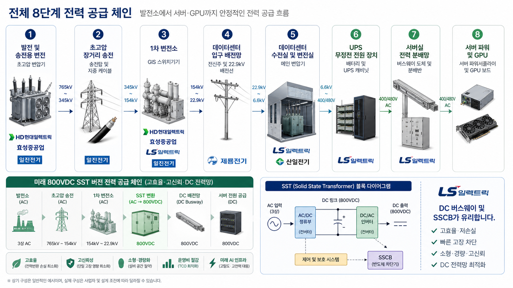

발전→송전→배전→수전 전체 전력 체인을 구간별로 이해하면 800VDC DC 전환 시 어느 기업이 수혜이고 어느 기업이 위험한지 선명하게 보인다.
데이터센터 내부 전력 흐름
AC 초고압 수전
→ 변압기(AC 감압)
→ UPS(배터리 충전, AC→DC 변환)
→ 인버터(DC→AC 변환 후 서버실 송전)
→ PSU(AC→DC 변환, 서버 내부 동작)
현재 AC↔DC 변환이 여러 번 반복 → 손실 누적. 800VDC 전환의 목적은 이 낭비 구간을 줄이는 것.

🟢 수혜 확실 / 준비 완료
LS일렉트릭 — DC 전환 핵심 부품인 직류 버스웨이 + 국내 최초 SSCB(솔리드 스테이트 차단기) 기술 확보·실증 중. 기계식 차단기 시장이 반도체 차단기로 바뀔 때 선점 위치.
산일전기 — Phase 1~3 동안 AI 서버 랙 내부용 고효율 특수 변압기 수요 폭발. Phase 4(2029+) 이전까지 호실적 지속. 이후 SST 모듈 개발 성공 여부가 장기 생존의 열쇠.
🟡 기간망 수요 유지, 기술 전환 필요
HD현대일렉트릭·효성중공업 — 데이터센터 내부가 DC로 바뀌어도 발전소→정문까지 국가 기간망은 여전히 AC 초고압. 대형 변압기 수요 당장 꺾이지 않음. 그러나 HVDC 트렌드 강화·Phase 4 SST 시장 열릴 때 반도체 소자 제어 기술 미확보 시 장기 진입 장벽 생길 수 있음. 효성중공업은 STATCOM 등 HVDC 연계 기술로 상대적으로 유리.
🔴 전환 리스크 높음
제룡전기 — 주력인 패드/주상 변압기(AC 기계식)는 DC 전환 가속 시 공급망 소외 위험. 노후 전력망 교체로 단기 실적은 견고하나 장기 포지셔닝 위험.
일진전기 — 초고압 AC 전력망 치중. DC 솔루션(SST, SSCB) 부문 기술 격차 존재. 직류 초고압 케이블 기술 고도화가 유일한 활로.